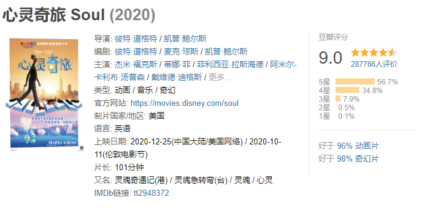
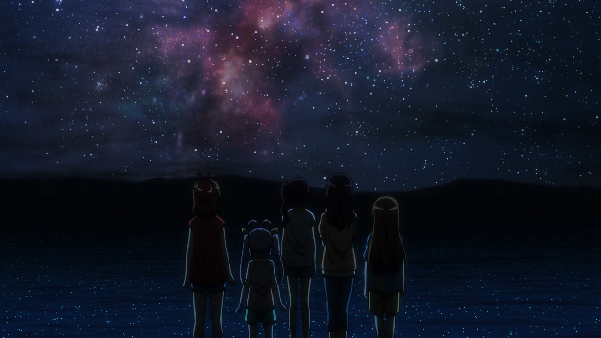

<!DOCTYPE html>
<html>
  <!DOCTYPE html>
<html lang="zh-CN">
<head><meta name="generator" content="Hexo 3.9.0">
  <meta http-equiv="content-type" content="text/html; charset=utf-8">
  <meta http-equiv="X-UA-Compatible" content="IE=Edge,chrome=1">
  
  <title>冬日 - zgshen&#39;s note</title>
  <meta name="viewport" content="width=device-width, initial-scale=1.0, maximum-scale=1.0, user-scalable=0">
  
  <meta name="keywords" content="其他">
  
  
    <link rel="shortcut icon" type="image/x-icon" href="/favicon.ico?v=1.02">
  
  
    <link rel="alternate" href="/atom.xml " title="zgshen&#39;s note" type="application/atom+xml">
  

  <link rel="stylesheet" href="/css/style.css">
</head></html>
  <body>
    <div class="container">
      <header class="header">
  <div class="blog-title">
    <a href="/" class="logo">zgshen&#39;s note</a>
    <div class="subtitle"></div>
  </div>
  <nav class="navbar">
    <ul class="menu">
      
        <li class="menu-item">
          <a href="/" class="menu-item-link">主页</a>
        </li>
      
        <li class="menu-item">
          <a href="/about" class="menu-item-link">关于</a>
        </li>
      
        <li class="menu-item">
          <a href="https://www.google.com/search?q=site:zguishen.com/" class="menu-item-link">搜索</a>
        </li>
      
    </ul>
  </nav>
</header>
<article class="post">
  <div class="post-title">
    <h1 class="article-title">冬日</h1>
  </div>
   <div class="post-meta">
    <span class="post-time">2021-01-03</span>
  </div>
  <div class="post-content">
    <p>以前对2020年的记忆是课本上的”2020全面建设小康社会“，一晃，2020年已经是历史了。<br><a id="more"></a></p>
<p>在2020年的最后一个月，上班一个多月，试用期期间，我还是选择了离职。说到底就不该入职这个公司，行业并不是自己多喜欢的音视频领域，想尝试坚持试试，但对出差实在反感，还要到长三角那边，这冬天这么冷……</p>
<p>上周寒流来临，广东也正式进入冬天了。天气一冷，皮肤干燥，行动迟缓，精神萎靡，最蛋疼的是鼻子又要遭罪了，一吹风拼命打喷嚏流鼻水。对冬天真实喜欢不起来。</p>
<p>冬日感觉最舒服的事情就是晒太阳了，一边晒太阳一边喝可乐，真的惬意。</p>
<p>上周去电影院看了《心灵奇旅》，明明买单写的是国语版，去到现场结果播的是英语，本来还想听听国语配音怎么样，看网络上评价还挺不错的。<br><a href="https://movie.douban.com/subject/24733428/" target="_blank" rel="noopener">心灵奇旅 Soul (2020)</a><br> </p>
<p>《心灵奇旅》可以说是给了打工人一碗鸡汤。当你进入憧憬的企业上班，日子久了，突然发现每天重复性的上班劳动，这是我们想要的生活么。”What I want is the ocean.“，鱼要找到大海，殊不知已置身于大海之中。生活虽有波澜起伏，更多时候是风平浪静，没必要一直赶着前进，活在当下更重要。</p>
<p>平静的日子回忆起小时候的时光，还是小时候好玩，不过现在看这番感觉有些幼齿了。<br><a href="https://movie.douban.com/subject/27063403/" target="_blank" rel="noopener">悠哉日常大王剧场版：假期活动 劇場版 のんのんびより ばけーしょん (2018)</a><br><br>这个星空场景真的美，现在家里乡下也难以见到漫天星星的夜空了。</p>

  </div>
  <div class="post-footer">
    
      <ul class="post-tag-list"><li class="post-tag-list-item"><a class="post-tag-list-link" href="/tags/其他/">其他</a></li></ul>
    

    <a href="#top" class="top">返回顶部</a>
  </div>
</article>
<footer>
  &copy; 2021
  <span class="author">
    zguishen
  </span>
</footer>
    </div>
	<script async src="https://www.googletagmanager.com/gtag/js?id=GA_MEASUREMENT_ID"></script>
	<script>
	  window.dataLayer = window.dataLayer || [];
	  function gtag(){dataLayer.push(arguments);}
	  gtag('js', new Date());
	  gtag('config', 'UA-106347761-1');
	</script>
  </body>
</html>